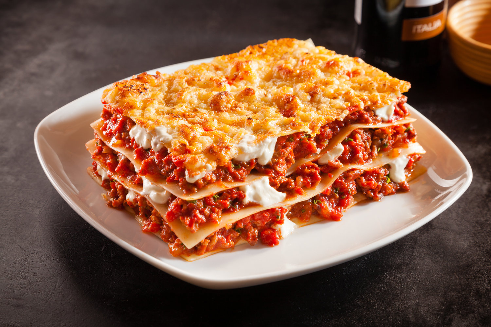

LASAGNA RECIPE
Back

DESCRIPTION
Lasagna is the name of one of the oldest and best-known pasta shapes. It is usually rectangular or ribbon shaped, thicker than tagliatelle, made from a dough based on flour and eggs, with numerous local variants.
Ingredietns
- Italian sausage & Lean ground beef
- Onion & garlic
- crushed tomatoes
- parsley & basil leaves
- Noodles & Cheese
Steps
- Cook in a large pot of salted water
- Cook sausage and beef with onion and garlic. Drain well, add pasta sauce and simmer
- Stir the cheese mixture toegether in a bowl
- Layer meat sauce and cheese mixture with asagna noodles and bake